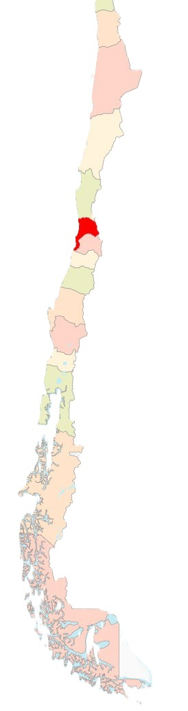
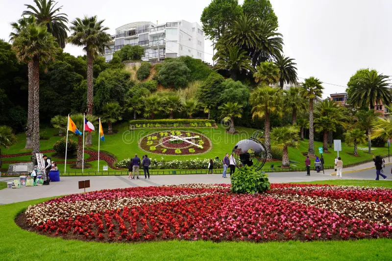
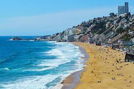

Where is Viña del Mar Located?
Chilean Map


Viña del Mar: From Agricultural Lands to a Tourist Gem
Viña del Mar: From Agricultural Lands to a Tourist Gem
Viña del Mar, known as the "Garden City," has a rich history dating back to the 16th century when Spanish settlers established agricultural estates in the region. The land was primarily used for farming and cattle raising until the 19th century, when the Vergara family acquired vast properties. It was José Francisco Vergara who played a crucial role in urbanizing the area, officially founding Viña del Mar in 1878. With the expansion of the railway between Santiago and Valparaíso, the city quickly became a favored seaside retreat for Chile's elite. Its coastal beauty, mild climate, and strategic location contributed to its early growth as a luxury destination.

Viña del Mar's Evolution into a Cultural and Tourist Hub
Viña del Mar's Evolution into a Cultural and Tourist Hub
Throughout the 20th century, Viña del Mar solidified its reputation as Chile's tourism capital. The construction of elegant mansions, hotels, and the Viña del Mar Casino in 1930 transformed the city into a glamorous getaway. Cultural landmarks like the Quinta Vergara Palace and the International Song Festival further boosted its global appeal. Today, Viña del Mar balances modernity with tradition, attracting millions of visitors yearly. From its iconic Flower Clock to its renowned beaches, the city remains a symbol of Chilean elegance and leisure, preserving its history while embracing innovation.
Viña del Mar - Key Information
| Attribute | Details |
|---|---|
| Country | Chile |
| Region | Valparaíso |
| Founded | 1878 |
| Population | ~324,000 (as of 2023) |
| Area | 121.6 km² |
| Capital | Not a capital city (part of Valparaíso Region) |
| Official Language | Spanish |
| Local Currency | Chilean Peso (CLP) |
| Time Zone | CLT (UTC -4) / CLST (UTC -3 in summer) |
| Calling Code | +56 32 |
| Internet Speed | ~200 Mbps (average broadband speed) |